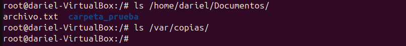
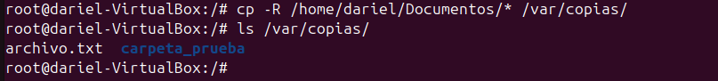
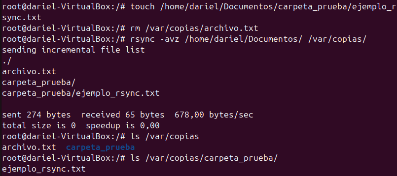

Copias de Seguridad en Linux
¿Qué es una copia de seguridad?
Una copia de seguridad es una duplicación de datos importantes que se almacena en un lugar seguro para poder recuperarlos en caso de pérdida, daño o corrupción de los datos originales. Las copias de seguridad son esenciales para proteger la información y garantizar la continuidad del trabajo.
Tipos de copias de seguridad
-
Copia de seguridad completa: Es una copia exacta de todos los datos seleccionados. Aunque es la más segura, también es la que más espacio y tiempo requiere.
- Recomendación: Realizar una copia de seguridad completa semanalmente o mensualmente, dependiendo del volumen de datos y la criticidad de la información.
-
Copia de seguridad incremental: Solo copia los datos que han cambiado desde la última copia de seguridad (completa o incremental). Es más rápida y ocupa menos espacio, pero la restauración puede ser más compleja.
- Recomendación: Realizar copias de seguridad incrementales diariamente para minimizar el tiempo y espacio de almacenamiento.
-
Copia de seguridad diferencial: Similar a la incremental, pero copia todos los datos que han cambiado desde la última copia de seguridad completa. Es un equilibrio entre la copia completa y la incremental.
- Recomendación: Realizar copias de seguridad diferenciales cada pocos días (por ejemplo, cada 3 días) para mantener un equilibrio entre tiempo de copia y facilidad de restauración.
El comando cp en Linux
El comando cp en Linux se utiliza para copiar archivos y directorios de un lugar a otro. Es una herramienta fundamental para la gestión de archivos en sistemas Unix y Linux.
Sintaxis básica
cp [opciones] origen destino
Parámetros comunes
-ro--recursive: Copia directorios de forma recursiva, incluyendo todos los archivos y subdirectorios.-io--interactive: Pide confirmación antes de sobrescribir archivos existentes en el destino.-uo--update: Copia solo los archivos que son más nuevos que los existentes en el destino o que no existen en el destino.-vo--verbose: Muestra información detallada de los archivos que se están copiando.-ao--archive: Preserva la estructura de directorios, atributos de archivo y enlaces simbólicos. Es equivalente a usar-dR --preserve=all.
El comando cp es una herramienta poderosa y flexible para la gestión de archivos en Linux, permitiendo realizar copias de seguridad y transferencias de archivos de manera eficiente.
Ejemplo Práctico
En este ejemplo páctico de cp, voy a copiar lo que se encuentre dentro del directorio /home/<usuario>/Documentos en /var/copias.

Ejecución del comando cp -R /home/<usuario>/Documents/* /var/copies y verificación de la cópia:

El comando rsync en Linux
El comando rsync es una herramienta avanzada para copiar y sincronizar archivos y directorios de manera eficiente entre diferentes ubicaciones. A diferencia de cp, rsync solo transfiere las diferencias entre el origen y el destino, lo que lo hace ideal para realizar copias de seguridad incrementales y diferenciales.
Sintaxis básica
rsync [opciones] origen destino
Parámetros comunes
-ao--archive: Modo de archivo, que preserva permisos, tiempos de modificación, y otros atributos.-vo--verbose: Muestra información detallada de los archivos que se están sincronizando.-zo--compress: Comprime los datos durante la transferencia para ahorrar ancho de banda.-P: Muestra el progreso de la transferencia y permite reanudar transferencias interrumpidas.--delete: Elimina archivos en el destino que ya no existen en el origen.
Ejemplo Práctico
En este ejemplo práctico de rsync, voy a sincronizar el contenido del directorio /home/<usuario>/Documentos con /var/copias.
rsync -avz /home/<usuario>/Documentos/ /var/copias/
Este comando sincroniza los archivos y directorios, mostrando detalles de la transferencia y comprimiendo los datos durante el proceso.

El comando rsync es una herramienta poderosa y eficiente para realizar copias de seguridad y sincronizaciones en sistemas Linux.
El comando dd en Linux
El comando dd en Linux se utiliza para copiar y convertir archivos de una manera más flexible y potente. Es especialmente útil para crear copias de seguridad de discos completos, particiones y dispositivos de almacenamiento.
Sintaxis básica
dd if=origen of=destino [opciones]
Parámetros comunes
if: Especifica el archivo de entrada (origen).of: Especifica el archivo de salida (destino).bs: Tamaño del bloque de datos que se copiará a la vez (por ejemplo,bs=4Mpara bloques de 4 megabytes).count: Número de bloques que se copiarán.status=progress: Muestra el progreso de la copia.
Ejemplo Práctico
En este ejemplo práctico de dd, voy a copiar el contenido del disco entero /dev/sda a otro disco /dev/sdb.
dd if=/dev/sda of=/dev/sdb bs=4M status=progress
Este comando copia el disco entero /dev/sda al disco /dev/sdb en bloques de 4 megabytes y muestra el progreso de la copia.

El comando dd es una herramienta poderosa para la creación de copias de seguridad de bajo nivel y la clonación de discos en sistemas Linux.
Verificación de la copia con md5sum
El comando md5sum en Linux se utiliza para calcular y verificar sumas de comprobación MD5, que son valores hash únicos generados a partir del contenido de un archivo. Esto permite verificar la integridad de los archivos copiados, asegurándose de que no se hayan producido errores durante la copia.
Sintaxis
md5sum /dev/sda /dev/sdb
La salida de los dos discos debe ser la misma, eso indica que se ha copiado correctamente.